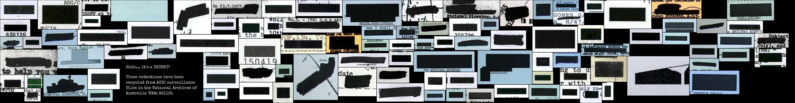

RecordSearch¶
RecordSearch is the online collection database of the National Archives of Australia. Based on the series system, RecordSearch provides rich, contextual information about series, items, agencies, and functions.
Unfortunately RecordSearch doesn't provide access to machine-readable data through an API, so we have to resort to screen scraping. The notebooks here make use of either the RecordSearch Data Scraper or the older RecordSearch Tools library to handle the scraping. I'm in the process of upgrading all the notebooks to use the newer scraper.
See below for information on running these notebooks in a live computing environment. Or just take them for a spin using Binder.

Harvesting data¶
Harvest items from a search in RecordSearch¶
Ever searched for items in RecordSearch and wanted to save the results as a CSV file, or in some other machine-readable format? This notebook walks you through the process of creating, managing, and saving item searches – all the way from search terms to downloadable dataset. You can even download all the images from items that have been digitised! And if you want to harvest series with more than 20,000 items, some strategies for this are included as well.
Harvest files with the access status of 'closed'¶
The National Archives of Australia's RecordSearch database includes some information about files that we're not allowed to see. These files have been through the access examination process and ended up with an access status of 'closed'. While you can search by access status in RecordSearch, you can't explore the reasons, so if you want to dig any deeper you need to harvest the data. This notebook shows you how.
Harvest recently digitised files from RecordSearch¶
This notebook scrapes data from the 'Newly scanned records' section of RecordSearch, creating a list of recently digitised files. See below for datasets created with this notebook.
Harvest details of all series in RecordSearch¶
This notebook get details of all series registered in RecordSearch, also generates a summary dataset with the total number of items digitised, described and in each access category.
Harvesting functions from the RecordSearch interface¶
This notebook attempts to extract information from the RecordSearch interface about the hierarchy of functions it uses to describe the work of government agencies. Previous explorations have shown that the NAA's use of functions is rather inconsistent. All I'm doing here is finding out what functions RecordSearch itself says it is using. This may not be complete, but it seems like a useful starting point.
Harvest agencies associated with all functions¶
This notebook loops through the list of functions that were extracted from the RecordSearch interface and saves basic details of the agencies responsible for each function. To keep down the file size and avoid too much duplication it doesn't include the full range of relationships that an agency might have. If you want the full agency data, use the app below to harvest agencies associated with an individual function or hierarchy.
Analysing data¶
Exploring harvested series data¶
Generates some basic statistics about the holdings of the National Archives from the full harvest of registered series.
How many of the functions are actually used?¶
In this notebook we'll import data about functions that we've harvested earlier and search for each of these functions in RecordSearch to see how many are actually used.
Who's responsible?¶
The National Archives of Australia's RecordSearch database divides government activities up into a series of functions. Over time, different agencies have been made responsible for these functions, and it can be interesting to track how these responsibilities have shifted. This notebook uses data about functions harvested from RecordSearch to create a a simple visualisation of the agencies responsible for a selected function.

Useful tools¶
DIY Redaction Art Collages¶
Redactions are a way of restricting access, of witholding information – they're dead ends. But with this notebook you can recycle redactions into something interesting, something creative, perhaps even something beautiful.

Just set the desired size of your final image and click on the button. A random sample of redactions will be obtained from the dataset and packed into the image dimensions. Once it's finished you'll be able to download both the finished collage, and a CSV dataset containing metadata that describes all the redactions used, including original file references. If you're not happy with the result, try again. Every piece of redaction art is unique!
Download the contents of a digitised file¶
RecordSearch lets you download a PDF of a digitised file, but sometimes it's more convenient to work with individual images. Just give this app the barcode of a digitised file and it will grab all the images as JPGs, zip them up into a folder, and generate a download link.
Get a list of agencies associated with a function¶
RecordSearch describes the business of government in terms of 'functions'. A function is an area of responsibility assigned to a particular government agency. Over time, functions change and move between agencies. If you're wanting to track particular areas of government activity, such as 'migration' or 'meteorology', it can be useful to start with functions, then follow the trail through agencies, series created by those agencies, and finally items contained within those series. This app makes it easy for you to download a list agencies associated with a particular function.
DFAT Cable Finder¶
If you ever need to find a file in the National Archives of Australia that contains a specific numbered cable from the Department of Foreign Affairs this is the tool for you! Just give it a cable number and it will look in the series listed below for a file that might contain the cable. For each possible match it returns a link to the file as well as a bit of information about it.

Data¶
Summary data about all series in RecordSearch¶
Harvested in May 2021
CSV file (15mb) – containing basic descriptive information about all the series currently registered on RecordSearch as well as the total number of items described, digitised, and in each access category.
Recently digitised files¶
Harvested on 27 March 2020.
CSV file containing details of files digitised between 25 February and 26 March 2020, harvested using the notebook above.
Recently digitised files – repository of weekly snapshots¶
This repository contains weekly harvests of newly digitised files in RecordSearch. The automated scraper is currently scheduled to run each Sunday, saving a list of files that have been digitised in the previous week. The weekly datasets are saved as CSV files in the data directory. The date of the harvest is recorded in the file name, so digitised-week-ending-20210328.csv was harvested on 28 March 2021.
The CSV files contain the following fields:
titleitem_idseriescontrol_symboldate_rangedate_digitised
Run these notebooks¶
There are a number of different ways to use these notebooks. Binder is quickest and easiest, but it doesn't save your data. I've listed a number of options below from easiest to most complicated (requiring more technical knowledge). See the running Jupyter notebooks page for more details and additional options.
Using Binder¶

Click on the button above to launch the notebooks in this repository using the Binder service (it might take a little while to load). This is a free service, but note that sessions will close if you stop using the notebooks, and no data will be saved. Make sure you download any changed notebooks or harvested data that you want to save.
See Using Binder for more information.
Using Reclaim Cloud¶

Reclaim Cloud is a paid hosting service, aimed particularly at supported digital scholarship in the humanities. Unlike Binder, the environments you create on Reclaim Cloud will save your data – even if you switch them off! To run this repository on Reclaim Cloud for the first time:
- Create a Reclaim Cloud account and log in.
- Click on the button above to start the installation process.
- A dialogue box will ask you to set a password, this is used to limit access to your Jupyter installation.
- Sit back and wait for the installation to complete!
- Once the installation is finished click on the 'Open in Browser' button of your newly created environment (note that you might need to wait a few minutes before everything is ready).
See Using Reclaim Cloud for more information.
Using Docker¶
You can use Docker to run a pre-built computing environment on your own computer. It will set up everything you need to run the notebooks in this repository. This is free, but requires more technical knowledge – you'll have to install Docker on your computer, and be able to use the command line.
- Install Docker Desktop.
- Create a new directory for this repository and open it from the command line.
- From the command line, run the following command:
docker run -p 8888:8888 --name recordsearch -v "$PWD":/home/jovyan/work quay.io/glamworkbench/recordsearch repo2docker-entrypoint jupyter lab --ip 0.0.0.0 --NotebookApp.token='' --LabApp.default_url='/lab/tree/index.ipynb' - It will take a while to download and configure the Docker image. Once it's ready you'll see a message saying that Jupyter Notebook is running.
- Point your web browser to
http://127.0.0.1:8888
See Using Docker for more information.
Cite as¶
Sherratt, Tim. (2019, November 17). GLAM-Workbench/recordsearch (Version v0.1.0). Zenodo. http://doi.org/10.5281/zenodo.3544754